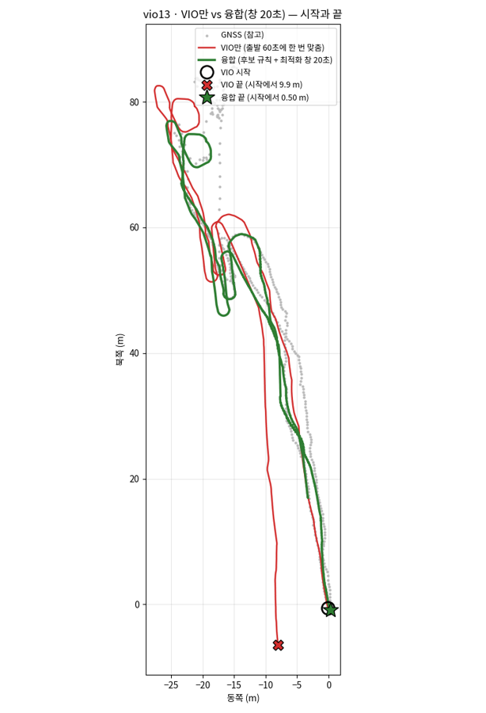
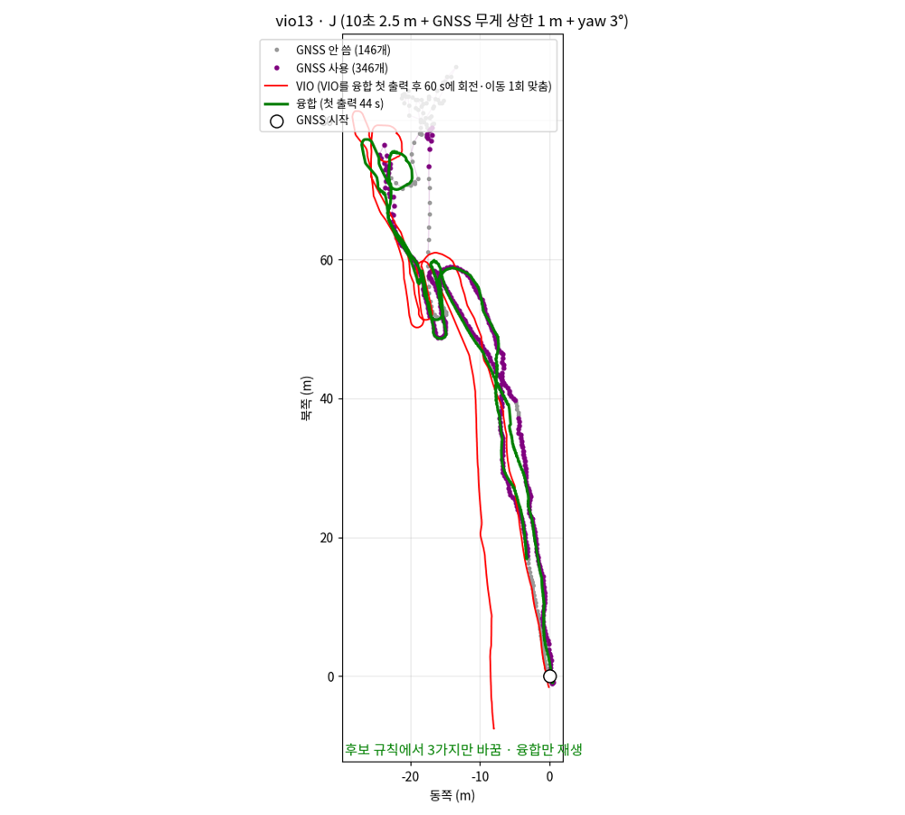
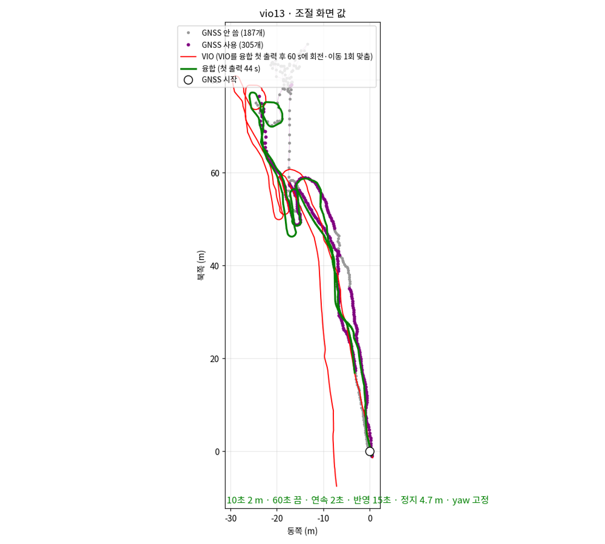

⑦ 11/20 야지 — VIO와 GNSS 융합 (후보 규칙)
11/20 13:17 야지 녹화(vio13) · 약 8분 · 북쪽 약 80 m 길을 다녀오며 중간 구역을 두 번 지남. 노트북 재생 결과(Pi5 VIO 구성, 카메라–IMU +2.49° 보정). 보드 설정은 바꾸지 않음.
핵심
- GNSS는 DGNSS 189 · RTK FLOAT 303 · RTK FIX 0. 해 종류가 54번 바뀌어 원래 규칙으로는 정렬이 안 됨 → 해 종류가 바뀌어도 정렬 쌍 유지로 44초에 정렬.
- 거르기는 10초 이동 비교 하나가 중심(60초 비교 끔). 같은 구역을 두 번 지난 길이 서로 겹치도록 12가지 값을 비교해 고름.
- 결과: 끝에서 GNSS와 0.1 m, 전체 중앙 0.5 m, 두 번 지난 길 차이 중앙 0.8 m.
영상 1 — 두 번 지난 길 맞추기 설정
왼쪽: 휴대폰 영상(작은 화면 = 로봇 OAK 카메라) · 오른쪽: 위에서 본 궤적, 빨강 ▲ VIO · 초록 ▲ GNSS 융합 · 아래: 속도와 위치 보정 상태. 휴대폰·로봇 시간은 화면 움직임으로 맞춤(±2초 정도).
영상 2 — 끝점 0.5 m 설정 (후보 규칙 + 최적화 창 20초)
같은 녹화, 같은 화면 구성. 융합 설정만 다름: 후보 규칙에서 최적화 창 10초 → 20초. 출발점으로 돌아온 마지막 융합 위치가 VIO 시작 위치에서 0.50 m (위 영상 설정은 0.61 m, VIO만은 9.9 m).
| 설정 | 융합 끝 ↔ VIO 시작 | 두 번 지난 길 차이 (중앙) | 전체 GNSS와 |
|---|---|---|---|
| 영상 1 (10초 2.5 m + 무게 상한 1 m + yaw 3°) | 0.61 m | 0.79 m | 0.50 m |
| 영상 2 (후보 규칙 + 창 20초) | 0.50 m | 1.44 m | 1.28 m |
| VIO만 (출발 60초에 한 번 맞춤) | 9.9 m | — | — |

설정 (11/20 후보 규칙 + 튜닝)
| 항목 | 값 | 뜻 |
|---|---|---|
| 정렬 | GNSS만, 15 m·3°, 해 종류 바뀌어도 쌍 유지 | 처음 방향을 GNSS 궤적과 VIO 궤적을 겹쳐 한 번 맞춤 |
| 10초 이동 비교 | 2.5 m (후보 2 m) | GNSS 10초 이동이 VIO와 이보다 다르면 안 씀 |
| 60초 비교 · hAcc 제한 | 끔 | 조건을 줄임 |
| 연속 통과 · 서서히 반영 · 정지 확인 | 2초 · 15초 · 4.7 m | 거른 뒤 다시 쓸 때 들락날락·점프 방지 |
| GNSS 무게 상한 | 1 m (후보 2 m) | GNSS를 0.5~1 m 정확도로 보고 당김 |
| yaw 고정 | 3° (후보 1°), 120초에 걸쳐 따라감 | 방향이 크게 흔들리지 않게(끄면 59°까지 흔들림) |
| 높이 | VIO 그대로 | GNSS는 높이를 건드리지 않음 |
값 고르기 — 같은 구역 두 번 지난 길 맞추기
113~207초와 324~383초에 같은 구역을 지남. 두 번의 융합 궤적이 서로 얼마나 떨어지는지(작을수록 좋음)로 비교.
| 설정 | 두 번 지난 길 차이 (중앙 / 90%) | 그 구간 GNSS와 | 전체 | 1초 최대 보정 |
|---|---|---|---|---|
| 후보 규칙 그대로 | 1.47 / 2.48 m | 0.66 m | 1.01 m | 0.23 m |
| 무게 상한 1 m + yaw 3° | 1.08 / 2.55 m | 0.41 m | 0.63 m | 0.29 m |
| + 10초 비교 2.5 m (위 영상) | 0.79 / 3.24 m | 0.42 m | 0.50 m | 0.31 m |
| 10초 비교 3 m만 | 0.70 / 3.35 m | 0.47 m | 0.57 m | 0.44 m |
| 10초 비교 1.5 m | 1.99 / 3.40 m | 0.74 m | 1.33 m | 0.37 m |


남은 문제
- RTK FIX가 없는 녹화라 정답 위치가 없음 — "두 번 지난 길이 겹치는지"와 GNSS 차이로만 판단.
- 녹화 1개 기준 튜닝. 같은 날 30분 전 vio12는 RTK FIX 49%였지만 OAK가 42초에 멈춰 VIO 비교 불가.
- 노트북 재생 결과. 보드(Pi5)에는 아직 반영 안 함.